Dying Light : The Beast
Retour aux Aventures en coursLa Guilde retourne dans un monde ravagé par les infectés, où chaque nuit transforme la survie en véritable chasse à l’homme.
📜 Informations de l'expédition
Origine :
Expédition en direct ⚔️
Statut :
En expédition ⚔️
📅 Début : Août 2026
🎮 Type : Survie / Action / Horreur
👥 Participants : MK, Elfyre
📖 Histoire de l'aventure
Après avoir été retenu prisonnier pendant des années, Kyle Crane revient dans un monde qu’il ne reconnaît plus. Entre les ruines de Castor Woods, les hordes d’infectés et les secrets qui entourent sa propre transformation, chaque découverte rapproche un peu plus Crane de la vérité.
La Guilde devra explorer cette région dangereuse, repousser les infectés et apprendre à maîtriser une nouvelle puissance qui pourrait bien être aussi dangereuse que les monstres qu’elle combat.
🎯 Objectifs de l'expédition
- 🗺️ Explorer les terres sauvages de Castor Woods
- 🧟 Affronter les infectés et survivre à la nuit
- 🐺 Découvrir les secrets de la Bête
🎬 Souvenirs de l'expédition
Retrouvez les chroniques de cette aventure.